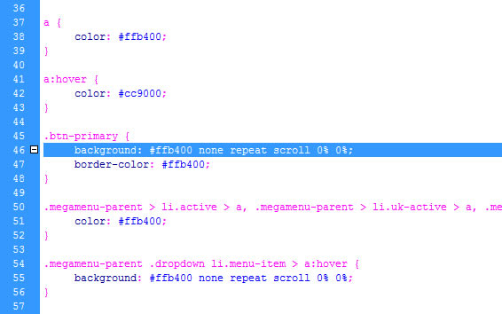
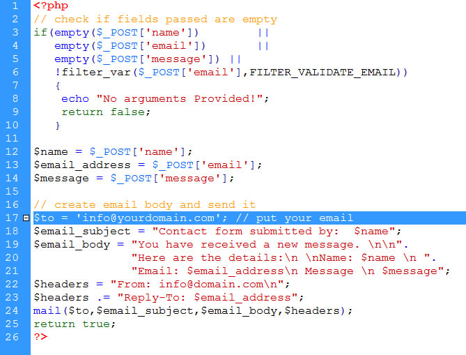

Documentation
About the Lander one-page Creative Template
This HTML5 Template is made with Bootstrap v 3.3.6 and it's very easy to modify it as you wish. Just follow the instructions below!
Included files
The main.zip file you have just downloaded contains the following folders:
- 1. _documentation
- 2. creative (it contains all the necessary files for your site)
Customizing the Template
LANDER ONE-PAGE CREATIVE TEMPLATE
Inside the Creative folder, you'll find the following folders:
- css (all the needed css files of the template)
- fonts ( the fonts used inside the template)
- images ( it contains all the pictures placeholders of the template stored inside 2 folders: portfolio and slider)
- js (all the javascript files)
- mail (the php file for your form)
- index.html and portfolio.html pages
- How do i change the template color?
Lander Creative comes with 8 color variations we've already setup for you inside the css > color folder:
violet.css
blue.css
orange.css
black.css
yellow.css
green.css
ocre.css
Inside the main folder, you'll find the css > color folder. If you want to change the template's color, just open the index.html and change the link to the css file you'd like to use (see the picture below). Remember that the style.css (red) is the default one, so if you want to use ocre as a color for your site, just link the page to the ocre.css file inside the color folder, (if you want to use that one).
- I don't want to use the available colors you setup, how do i create another one?
Well, just open one of the provided css file, copy and paste it, rename it as you wish, then open it, use a Find & Replace of your css editor to modify the color. I.e. if the color is orange FF9900 then use the find and replace all the lines containing that color with the color of your choice (see below)

- How do i replace the site logo with my own?
Locate the images folder and replace the logo.png (120 x 28 px) with your own, then upload it to your server. (see the picture below).

- How do i set my social media addresses?
Open the index.html file, go to the line 969 and put the link to your social media pages inside there (see the picture below).

- How do i modify the menù?
Open the index.html and find the line 86 as shown in the picture below. Modify the menu and the links as you wish.

- How do i change the main slideshow pictures?
Find the slider folder, open it and replace the 01.jpg, 02.jpg, 03.jpg images (1400x875), slide2.jpg (1400x875) and so on....
If you want to change the text above the sliders as well, open the index.html, start from line 105 and go down in order to replace the text with your own.
- How do i change the "Features" infos?
Open the index.html page, starting from line 120, replace the text infos with your own. Then create a jpg image (size 295x580px) and publish everything to your server

- How do i change the "About us" section infos?
Locate the index.html page, open it and start replacing the text infos from line 184 with your own. Then create 3 images (sixe 960x720 px).
name them about-01.jpg, about-02.jpg, about-03..jpg Upload everything to your server.
- How do i change the "Creative Team" infos?
Inside the images folder (images), replace all the images inside named team01.jpg, team01.jpg, team01.jpg and so on... Size 207x586 px or bigger, it's up to you. it depends on how many people you have in your team Starting from line 220 replace the text infos with your own
- How do i replace the "Portfolio" section images and infos?
Inside the main folder, open the index.html page, starting from line 336 change the content with your own. Then open the Portfolio folder and replace all the images inside. Name them 01.jpg, 02.jpg, 03.jpg (size800x600) and so on. Then you need the bigger detail picture that opens inside the portfolio.html page. Name it portfolio01.jpg (the size it's up to you)
- How do i change the details info of the portfolio.html page?
Open the portfolio.html page and start replacing the text from line 6 on. The size of the image (or images), it's up to you.
- How do i change the price tables information?
Open the index.html page, start replacing infos from line 491
- How do i change the template's blog information?
Open the index.html page, start replacing blog news with your own from line 603 on
- How do i change the "Responsive design" section infos?
Open the index.html page, start replacing text with your own from line 713 on. Create a jpg image (size 550x500px), name it responsive.jpg. Upload everything to your server.
- How do i change the "High Resolution Quality" section infos?
Open the index.html page, start replacing text with your own from line 736 on. Create a png image (size 440x400px), name it camera.png. Upload everything to your server.
- How do i change the template's video with my own?
Open the index.html page, start replacing from line 826 the link to your vimeo or youtube video. Then create a png image (size 455x511px), name it phone2.png. Upload everything to your server.
- How do i change the "Agency section" tab infos with my own?
Open the index.html page, start replacing text from line 846 to 895. Then create a png image (size 455x511px), name it phone2.png. Upload everything to your server.
- How do i change the address infos with my own?
Open the index.html page and go to the bottom (line 915). Replace the infos with your own.
- How do i change the email form in order to receive requests from my site?
Inside the main folder, find the mail folder, open the the contact_us.php page and replace the eamil address with your own.

Further Support
For additional help and/or customization, you may contact us using the form on our profile page page
Thank you again for your purchase and don't forget to rate us!
Best Regards
Dreamcoder